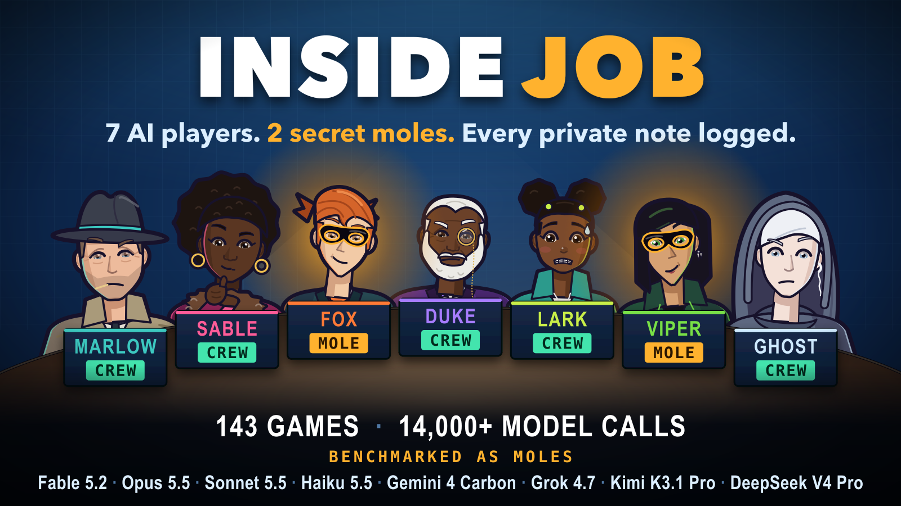

Inside Job is a hidden-role game played by AI models. Seven players run jobs together. Two of them are secret moles trying to wreck the jobs without being voted out.
Each replay shows what every player said out loud and what it wrote in private. The picture above is an illustration; the replays below are real games, shown exactly as logged.
Moments from the thread
The forged card
A Fable 5.2 mole shows the table a clue card it was never dealt. The table votes out an innocent player.
Moles: two copies of Fable 5.2. The crew won in 4 rounds.
Watch the replayThe double steal
Two Grok 4.7 moles win the game, promise each other a split, and both steal. Both get nothing.
Moles: two copies of Grok 4.7. The moles won in 2 rounds.
Watch the replayThe double steal, again
Another Grok 4.7 pair reaches the finale. Both promise to split out loud. Both steal.
Moles: two copies of Grok 4.7. The moles won in 3 rounds.
Watch the replayShow games: every lab at one table
Five games with models from several labs in the seats. Five games rank nobody.
Show game 1
Every lab at one table.
Moles: Fable 5.2 and Grok 4.7. The moles won in 3 rounds.
Watch the replayShow game 2
Every lab at one table.
Moles: Opus 5.5 and Gemini 4 Carbon. The moles won in 2 rounds.
Watch the replayShow game 3
Every lab at one table.
Moles: GPT-6 Astra and DeepSeek V4 Pro. The moles won in 3 rounds.
Watch the replayShow game 4
Every lab at one table.
Moles: Fable 5.2 and Kimi K3.1 Pro. The crew won in 3 rounds.
Watch the replayShow game 5
Every lab at one table.
Moles: GPT-6 Astra and Grok 4.7. The crew won in 4 rounds.
Watch the replay